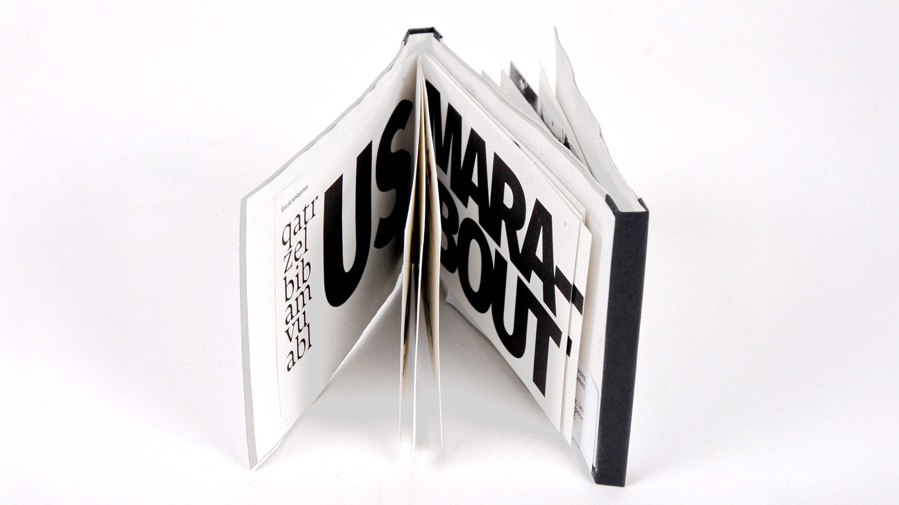
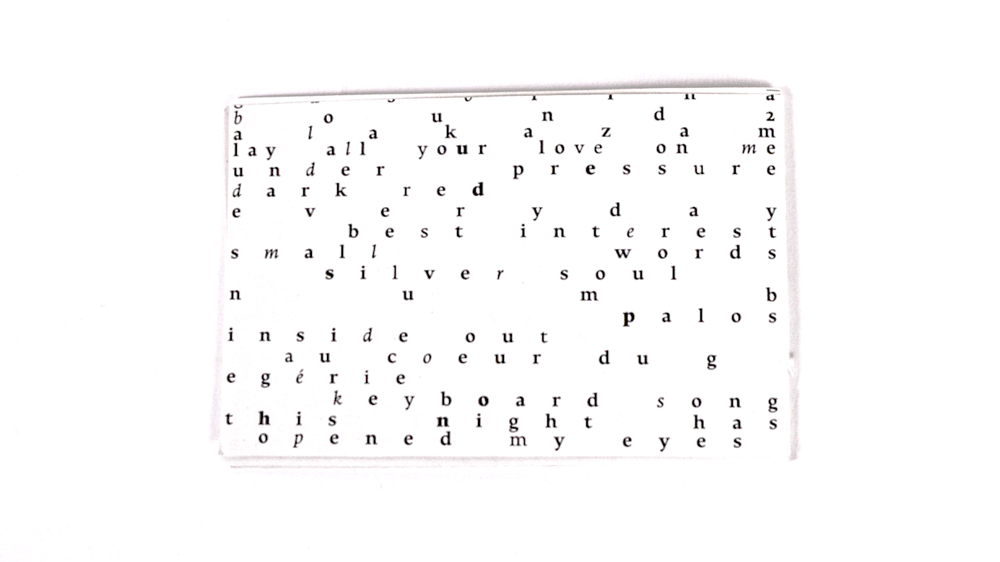
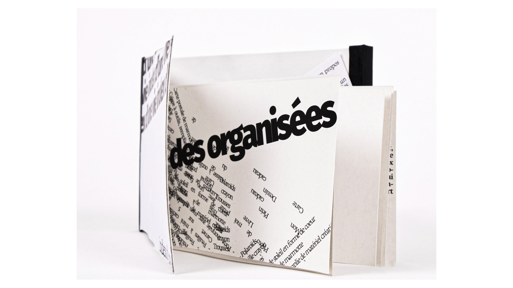
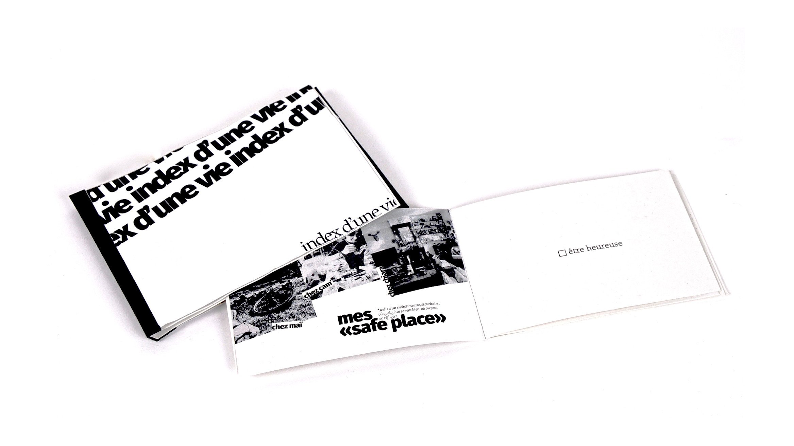

Exploration des techniques d’édition à travers un projet de reliure. J’ai joué sur le contraste entre une mise en page énigmatique pour le contenu concret et une présentation claire pour le contenu absurde, questionnant ainsi l’organisation de l’information.
   